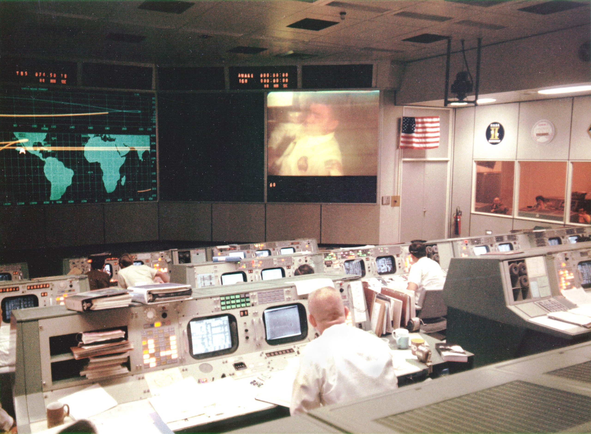

John Aaron: Steely-Eyed Missile Man

Who Was John Aaron?
Born in 1943 in Wellington, Texas, and raised on a ranch in rural western Oklahoma, John Aaron earned a physics degree in 1964 and joined NASA the same year. By Apollo he was an EECOM—the Mission Control position responsible for a spacecraft's electrical, environmental, and communication systems. Two missions made him a legend.
Apollo 12: "SCE to AUX"
⚡ The Lightning Strikes That Nearly Ended a Moon Landing
November 14, 1969. Lightning hit Apollo 12 twice—36 seconds after liftoff, and again at 52 seconds. The fuel cells dropped offline, alarms lit up the cockpit, and the telemetry on Mission Control's screens turned to gibberish. Controllers were blind. An abort looked likely.
Aaron had seen that exact pattern of garbage data once, in a ground test a year earlier—and had bothered to trace it to an obscure box called the Signal Conditioning Equipment (SCE), which had a backup power mode.
"Flight, EECOM. Try SCE to Aux." — John Aaron, Mission Control
Almost nobody knew what he meant. When CAPCOM Gerald Carr relayed the call, Commander Pete Conrad shot back: "What the hell is that?"
But Lunar Module Pilot Alan Bean remembered the little switch on Panel 8—and flipped it to AUX.
Telemetry snapped back clean. With good data again, the crew reset the fuel cells, and Apollo 12 flew on to a pinpoint Moon landing.
The Nickname:
That call earned Aaron Mission Control's highest compliment: "steely-eyed missile man." It stuck for the rest of his career.
Apollo 13: Master of the Watts
🔋 In Charge of Every Watt on Two Spacecraft
After the explosion, Gene Kranz put Aaron in charge of power and consumables for both spacecraft—with authority to veto anything that used a watt he hadn't budgeted. Mission Control's mainframes crunched the trajectory; the watt-counting was done with slide rules and graph paper.
The Battery Problem
Odyssey's three re-entry batteries held about 120 amp-hours when full, and a normal re-entry burned roughly 70–80. In the scramble after the explosion, one battery had been drawn down to about half—the set was some 20 amp-hours short, and nobody wanted to fly re-entry without margin.
The fix nobody had ever tried: run power backwards through the docking-tunnel umbilical and recharge Odyssey's battery from Aquarius. Aaron's team worked out the procedure with LM specialist Bill Peters. The trickle charge ran about 15 hours and brought the batteries back to roughly 118 amp-hours—essentially full for the ride home.
The Power-Up Sequence
No one had ever restarted a cold, dead Command Module in flight. Aaron's tiger team wrote a bare-minimum sequence to wake Odyssey without blowing the power budget. Arnie Aldrich integrated the checklists, and Ken Mattingly flew them over and over in the simulator, feeding fixes back until every step worked. Reading the final procedures up to the crew took about two hours.
Result: Odyssey Woke Up
The frozen, dripping-wet Command Module powered up without a single short circuit—and splashed down with amp-hours to spare. Aaron's budget held.
After Apollo
Aaron led the EECOM section through Skylab, managed the Space Shuttle's flight software, and rose to senior leadership at Johnson Space Center, retiring in 2000 after 36 years at NASA. With the rest of the Apollo 13 Mission Operations Team, he received the Presidential Medal of Freedom. In the 1995 film Apollo 13 he is played by Loren Dean.
Why John Aaron Matters
1. He did his homework
"SCE to AUX" wasn't luck. Aaron chased down a weird reading from a test a year earlier when nobody asked him to. When the same pattern hit a real mission, he was the one person ready.
2. He thought in systems
On Apollo 13 he treated power as the mission's master constraint—and made every checklist answer to it.
3. He worked through a team
Checklist writers, simulator crews, contractor engineers—Aaron orchestrated them all. The rescue's most famous procedure carries his name because of how many hands he coordinated, not because he worked alone.
A Steely-Eyed Missile Man
When spacecraft fail and lives hang on the numbers,
you want someone cool, prepared, and decisive at the console.
NASA had John Aaron.